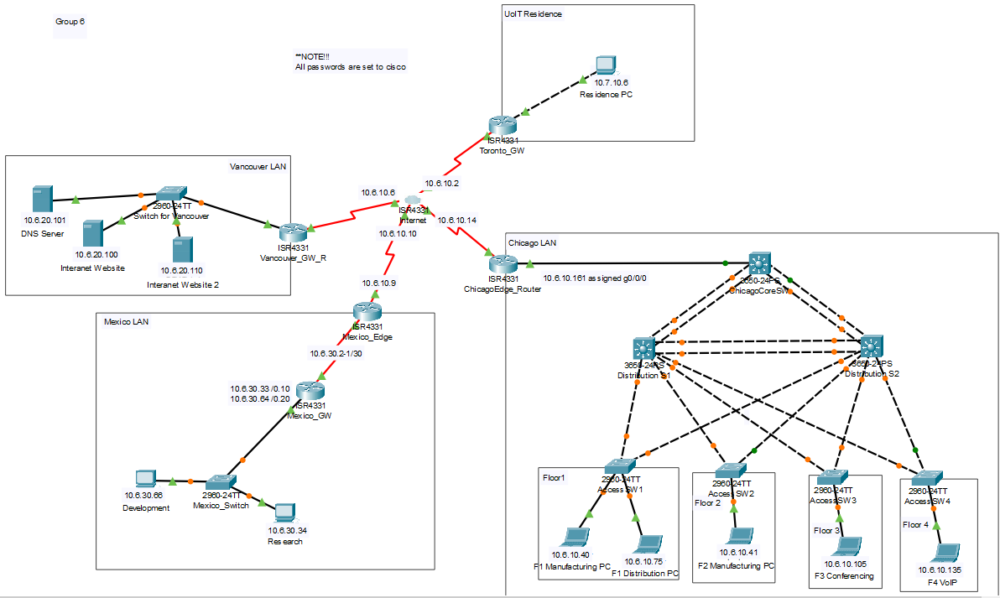
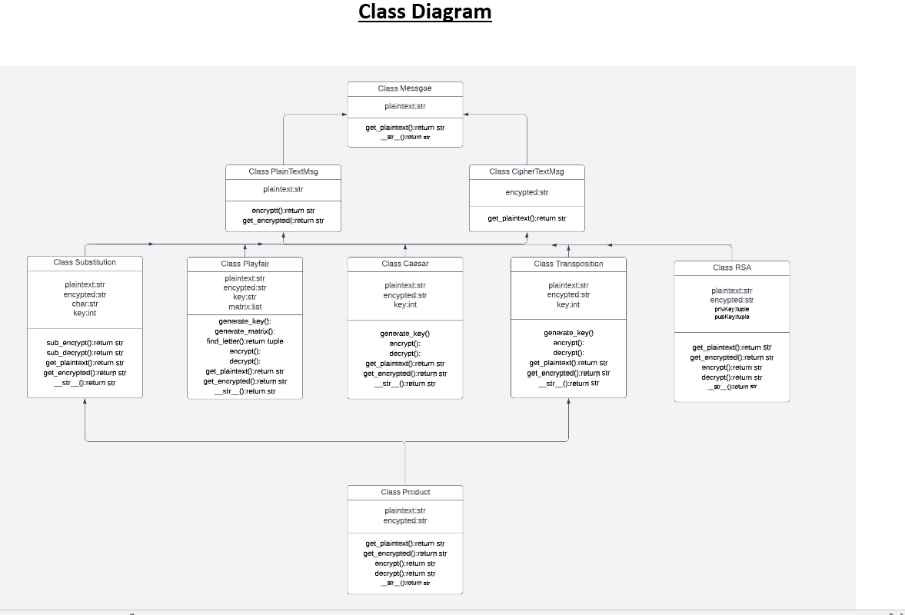
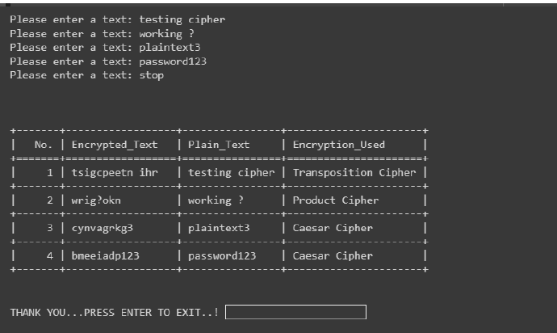

Project Highlights
Final Project -Intro to Networking II (INFR 1421U)
Worked with team of 4 to build and implement an enterprise network on Cisco Packet Tracer
Implemented multiple routinng, switching and security protocols
Final Project Object Oreinted Programming (INFR 2141U)
Designed and created a python program to for encryption using different method
 